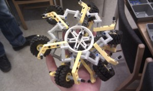
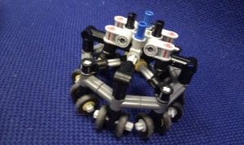
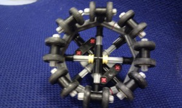
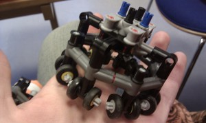
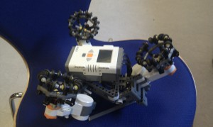

Category: Refining the project
The flock behavior: from scratch till now
| August 23, 2011 | Posted by Guillaume under Ground robots, Ideas, Issues, Programming, Refining the project, Testing |
Comments off
|
Introduction
The flock behavior is one of the last things we had to deal with because of all the amount of work before that, but it is one of the most important feature of the project and we spent a lot of time implementing, coding and testing it in order to make it close to our expectations. This article will be the most important concerning the flock behavior: it might talk about points that have already been mentioned before but that is only in order to give more details and further explanations.
Our supervisor let us know that a former student already worked on mobile robots moving in formation1. It was really interesting to see how a same project can be approached in different ways: instead of giving most of the control to the robots in the flock, we decided to put the leader in charge for almost everything. This decision made the programming and implementation different but we came out with a very autonomous system at the end of the project.
This article will be structured in the same way the flock behavior was designed: with progressive layers. We integrated one behavior at a time, tested it over and over and passed to the next one. In every point here, we will ask what we wanted to do, why we wanted to do it, what was expected and what were the results.
The different steps of the flock
The basic flock
Expectations
This was the really first approach we had. Basically, the image analysis would return two coordinates: one for the leader and the other for the robot following. The robot following the leader was only supposed to go “down” the leader (we take the coordinates of the leader and subtract a value called “desiredSpace” that will define the space between each neighbor unit in the formation). With such an implementation, we were expecting the robot following to act roughly like the leader with a little delay that we were ready to tackle if it was too important.
Results
We posted videos in the previous article (under “Very first working test”) and we could see that the behavior was working but wasn’t fluid at all. The robot was properly changing its position according to the leader movements, we just needed to tune our parameters in order to make it more reactive, more suitable.
Improvements
In order to understand how we improved the fluidity, we have to tell you more about how the flock is being monitored. The code in itself is really long, and it might be too much to expose it straight here; instead, a basic representation should do the trick and expose you the inner mechanics of the algorithm.
 |
| [Figure 1] Cycle of the flock handling process |
|---|
As you might have pictured it in your mind, the big loop is indeed an infinite loop in our program. Every time one cycle has been done, the system makes a pause of a certain time (that we can settle) in order not to send too much commands to the bricks. Indeed, if hadn’t do that, the program would still work, but we would have a lot of useless information sent to the brick that wouldn’t even be treated because they would be erased by the next commands (if the robot is executing a command and receives a new one, it will abort the previous one and execute the most recent).
All of those explanation to make you understand our system and to show you where we tuned our parameter in order to fix our delay problem. First, we change the pause in the loop from 1 second to 0,25 second (which made us gain in response time). Secondly, we change a layer in the “Assign and Send Movement Command”. Actually this minor change was operated on the brick in itself: the robot is asked to move with a speed inversely proportional to the distance it is asked to move. Nevertheless, an overshot problem was still remaining and we had to tune another parameter to fix it: every time a robot is on its desired location, we define a threshold, a circle of tolerance acknowledging the robot in good position or not. We changed it from 10cm to 30cm and made it work.
At this point, tuning few parameters of our system and adding a proportional correction transformed our jerky system into a reliable and fluid one.
A dynamic and oriented flock
Expectations
At this point, one robot was properly following the other one. But the “Compute desired positions” layer was quite simple as we mentioned before: it only translated the position of the leader down and gave it to the other robot. We wanted to have a random number of robots in the flock and we wanted the flock to adapt itself in real-time according to this number. Besides, we wanted to add the “orientation” feature. Instead of staying below the leader, we wanted the flock to stay behind (that is to say in the opposite direction that the leader is looking at). Why such a choice you might say. Indeed, if our project was designed to work only in straight lines, we wouldn’t mind but we really wanted to implement something that would be coherent for direction changes. This feature would give the ability to the flock to follow the leader instead of simply staying behind, naively copying the leader’s gesture.
How we implemented it
The algorithm is quite detailed once more; instead of explaining the code line by line or so, we split the functioning in its three biggest parts in order to show you the mechanics.
 |
 |
 |
| [Figure 2] The algorithm detects the number of units detected (4 in our case) | [Figure 3] It draws a polygon of n (number of units detected) sides with the leader being at the center… | [Figure 4]…and then translates the polygon such as the first summit would be the leader. All the other summits represent the positions for the flock |
|---|
After the algorithm has run, we have a set of positions of the robots and a set of positions for the desired positions. The next challenge was to find the best position to go for each robot and make it optimal for the whole flock. For this matter, several solution were found:
- look at all the possible solutions and take the best one ~ O(n!) which is barely acceptable even if we are working with four units at most (we rejected this solution because our algorithm is supposed to work with n robots and who could accept an algorithm with such a complexity…)
- look at the best solution for each individual ~ O(n²)
Results
| [Video 1] Looking at the flock self-adjusting in real-time |
|---|
We had exactly what we wanted for this feature, we can exactly see how the different polygons shape with the robots coming on the field and this works whatever the direction of the leader. Nevertheless, the robots are not moving on this video because they could intersect each other’s path and therefore ruin the flock. This is why the next step was crucial: we had to deal with the avoidance. [Video 1]
Improvements
The first version of the algorithm that computed the position for the robots only needed a radius for the circle containing the polygon of the units. Problem being: the more units we had in the flock, the closer they would be. In order to fix that, the radius of this circle had to change according to the number of present units in the flock. Using basic trigonometry, we came out with a formula for this radius that make the distance between neighbor units constant.

This arrangement is indeed proper with a small number of robots but the bigger the flock gets, the bigger the polygon will be. This can be annoying, especially if we want to use the less space possible on the floor; we have an unused area proportional to the square of the number of units and the distance between them (2,8m² for 10 units for instance). In order to solve that, we could change the “Compute desired location” layer and instead of making one polygon of robots, we could make several polygons inside each other and save this way all the unused space. Here are some ideas we could think of on the Figure 5.
 |
| [Figure 5] Template we could use for improved flock position (with numerous robots). On the left template, we multiply the units by two on the outer belt; on the right template, we add one more unit to the outer belt. Those are indeed examples, we don’t have a precise idea of what is or should be the best one, it is just fuel for thoughts. |
|---|
We could even think to dispatch the units all around the leader: the leader would be the center of all those nested polygons. It could be a real advantage if we have a lot of units in the flock: they would be all in an optimal layout in order to stay in the FOV. Nevertheless, we would have a lot of problem with the avoidance that we are going to develop in the next section.
Implementing the movements of the flock
Expectations
At this point, we had everything working in theory. We mean in theory because every time a robot is asked to go to a position, it will go where it is ask to go without asking further question. Basically, this section describes how the “Assign and send movement commands to bricks” layer [Figure 1] is designed. In order to have a stable system, we had to answer/find a way to solve the following problems:
- The robots in the flock should not bump into each other;
- The robots should try to stay in the FOV of the camera in order to stay alive in the flock (if the robot is not detected for a while, it will be deleted from the flock);
- The robots in the flock should do their best in order to avoid the leader when maneuvering;
- Give a priority to all those behaviors in order to make everything coherent and working.
How we implemented it
How the robots avoid each other
As soon as the “Compute desired location” layer [Figure 1] has been executed, we have two things: a list of bricks in the flock with their positions and a set of desired positions (and they should be of the exact same length). Randomly, we are taking a robot and we are assigning it to a position. This is the point where the following algorithm is triggered:
public void giveBrickDirection(Brick b, Point p)
{
while( distancePositions(b.getPosition(), p) > proximityThreshold )
{
if(movementPossible(b, p))
{
b.setGoToPostion(p);
return;
}
else
{
p.translate((-p.x+b.getPosition().x)/3, (-p.y+b.getPosition().y)/3);
}
}
}
The mechanics are that simple: as long as the distance between the robot and its goal position is longer than the proximity threshold (this is the “error distance” we define in order to establish when a robot is close enough to its target), we look if the goal position is within range. If it is reachable, we send the command to the robot in order to send it to the desired position. If not, we reduce the distance of the command by 33%. The recursion is terminal because either the robot will be able to make the movement within few recursions or at one point the distance will get smaller than the threshold and the robot will stand still, waiting for the next command.
The black box in here would be the method movementPossible(Brick b, Point p). To make it understandable, the method goes through the list of all the brick and check if the movement of the considered brick b will not cross any other brick location or movement. In order to make it even simpler, take a look at the Figure 6.
 |
| [Figure 6] How the “collision area” is defined. As long as nothing is into or enters the green area, the red robot will be allowed to make its move. |
|---|
If the red brick has to move, we will compare with every other brick (the blue one here for instance) that there is no conflict. If the blue brick is not moving (as in our example), we check if the initial position is not in the “no collision area”; if not, the movement will be allowed. If the blue brick was moving, we would do two more checks: one to test if the blue robot’s desired location is not in the “no collision area” and we’ll check if the lines are intersecting with basic geometry rules.
How the robots survive (from being excluded from the FOV)
This behavior was really simple to approach and implement, here is some code to illustrate it:
if ( getConsideredBricks().get(i).isOnEdge() )
{
giveBrickDirection(currentBrick,
new Point((brickInControl.getPosition().x-brickPosition.x)/2+brickPosition.x,
(brickInControl.getPosition().y-brickPosition.y)/2+brickPosition.y));
}
Basically, every brick has an boolean attribute “isOnEdge” given by the drone. If the robot is too close to the limit of the FOV, the attribute “isOnEdge” switches to true and we just ask the robot to get closer to the leader. With the drone being supposed to stay on top of the leader, the robot getting closer to the edge will therefore get closer to the leader/the center of the FOV.
How the robots avoid the leader
This feature works exactly the same way than the previous one. We check if the robot is too close to the leader. If not, the robot might proceed to the normal routine (previously mentioned); if so, the robot has to “escape” from the leader. Why should we do complicated when a simple solution works a charm?
How we merge all those behaviors together
How to order those behaviors would have an important impact on the global behavior of the system. If we take a closer, we can detect that some commands contradict each other (survival and leader avoidance for instance): this is why we took a long time in order prioritize each behavior according to the way we wanted the system to respond [Figure 7].
 |
| [Figure 7] The prioritization of the movement behavior |
|---|
Our first goal was to keep the most of the units in the flock, this is why the survival behavior (staying inside the FOV) behavior is the one with most priority. The leader avoidance is something crucial for us because we know how annoying it is to be blocked by another unit while trying to move in a world: this is why it has been given the second priority. And at last, if no one of the previous behavior has been activated, the normal movement behavior will be triggered. Indeed, in every of those case, when a robot is asked to go to a position, the giveBrickDirection method is called and we check if the robot is enabled to move or not (or we try to make a part of this movement).
Results
Well those videos are the one we took at the end of our project. Everything is working as we expected and described it above, using a webcam on the roof or using the drone. Nonetheless, if we had more time, there would be a lot more to do in order to improve this project and we will expose few ideas in the next section. In the meanwhile here is all the videos that are relevant to all that have been mentioned before. [Videos 2-5]
| [Video 2] from above: the green robot is the leader all the time it appears on the screen; as soon as it goes out of the FOV, the yellow one takes the lead. It is a great video if you want to see how the leader avoidance works: every time the leader changes direction and goes towards a unit, this very unit escapes the leader and lets the leader pass. | [Video 3] from above: green has the lead. This time, we can see that the red goes out of the screen (the edges were defined very low for this video) and as soon it has disappeared, you can see the blue robot changing the formation. |
|---|---|
| [Video 4] from the field: blue is the leader and we use the drone. You will see a lot of errors in this video: the yellow color is not well detected from time to time, the avoidance is not that well tuned (we had to increase the proximity threshold) and the orientation of the robot were not that well handled. The yellow unit died quite often even if we replaced it in the flock. | [Video 5] from the field: blue is the leader and we use once more the drone. You can see the dynamic flock (at the beginning, when inserting unit one at the time), and all the avoidance behavior (all the units try not to bump into the leader and you can watch at the end, before the crash, how the red and the green unit slow down their speed in order not to cross each other’s path) |
Improvements
First of all, we needed the robot to keep a straight orientation. It could have been done with a compass sensor and we actually did it. But we couldn’t handle all the magnetic fields in the room we are working in and this has paralyzed our project in a certain way (the use of a PID correction in order to keep the orientation almost solved the problem). And this is the reason why you might see us on some videos putting the robots straight on the floor. So, one major improvement: restore the thread on the robots making them face the same direction as the drone.
Second and biggest improvement: adding behaviors to the robots. They could indeed have an obstacle avoidance behavior in order to give them more responsibilities for instance. They could try to find their way back into the FOV when lost (and the rest of the flock could wait for it or even try to look for him). Giving the robots a more autonomous behavior would without a doubt improve the project, but we should always keep in mind that the leader is the hive-mind of the system and the robots have to give it the highest priority.
References
- PhD dissertation by Jakob Fredslund; Simplicity Applied in Projects Involving Embodied, Autonomous Robots; pp67-124 [↩]
Merging our work together: the beginnings of worthy and notable results.
| August 4, 2011 | Posted by Guillaume under Ground robots, Ideas, Programming, Refining the project, Testing |
Comments off
|
It’s been two weeks now we have been working together in order to merge our work (one on the drone/image analysis and the other on the land units/flock behavior). This post will present you our latest changes, improvements and show you the first results we came out with.
More about the flock behavior
The flock behavior is not entirely implemented yet. By “entirely” and “yet”, we mean that we only have two robots: one leading and the other one following, being as such the only following member of the flock. Still, the flock behavior is on its way to the full implementation and we have right now a lot of features that make the system properly working. Among those features, you can namely find:
An enhanced GUI
We wanted to be able to choose the bricks we wanted to use, be able to reconnect them if any problem happened, without being forced to restart all the program and the bricks. We came out with the following design, handy for taking control according to our needs and to display the information we needed from the bricks.

First notable thing is that the GUI is dynamic: it will display a number of lines according to the devices initially added in the program. For each device, you can connect it in order to add it to the flock simply by clicking on its button or clicking on the “Connect all bricks” button.

Once connected, the second button will allow to take control of the brick either using the controller, or writing in the field with command lines compatible with the brick’s interpreter. The brick will feed the computer back in real-time: confirmation message on the first label and the battery level on the second one (we will talk more about this one later).
The change of leader
The change of leader is something we wanted to focus on because no one never knows what problem is going to happen during an experiment and for instance, the leader might perish. So, at this point, it was important to know what strategy to adopt if the flock loses its leader. The solution we used is simply to change randomly the leader if this one is lost. Nevertheless, another solution can be added: we could indeed find the nearest robot to the leader and give it the lead. Another solution would be to give different priorities to the robots as if they had more importance according to their status (it is easy to state that a tank is more likely to take the lead rather than an ambulance carrying people).
As we mentioned before, it is possible to change the leader of the flock and thus change the formation in real-time. The bricks in use are checked quite often (in a separate thread); so even if a brick connects to the flock after the program has started or disconnects from it during the experiment, a new leader will be picked, automatically or manually. Mentioning that, the notion of disconnection brought us to develop an interesting feature that follows.
The management of dead units
If we want to compute the positions of every brick, we need to know the exact number of units in the flock and if they are properly connected. If not, we would have a lot of delay and this would tremendously affect our results. The brick must warn the computer of its state so as to ease the computer in its calculation.
As soon as a brick is connected, it has a thread running, giving every half second a heartbeat. On the computer side, we make sure for each brick that we receive those heartbeats. If not, after five heartbeats missed (2.5 seconds of silence from the brick), we shut the connection and get ready to re-open it whenever the user wants it (maybe the time to fix the brick and put it back on track). At the same time, the brick itself sends its own battery level in every heartbeat: this is an information that can be relevantly used by the user and depending on a certain threshold (that we set around 6,1V), the brick sends a message “Battery level too low”, shuts the connection with the computer and turn itself down.
Here is a sample of the computer-side code for the heartbeat counter checker.
public void run()
{
resetCount();
while (getHeartBeatChecker() < 5) {
try {
Thread.sleep(500);
} catch (InterruptedException e) {
e.printStackTrace();
}
setHeartBeatChecker(getHeartBeatChecker()+1);
}
brick.closeConnection();
interrupt();
}
An oriented flock
This is the feature we are the most proud of and where the omniwheels are the most useful and worthy. The flock is not just supposed to follow the leader in a simple direction: no matter which direction the leader is going to, the flock is going to stay behind. Thus, the flock is moving really often, especially when the leader is changing direction, but this is even more pleasant to watch when it happens (this will be completely covered in the next and final article about the flock behavior, this is just a sample/teaser).
 |
 |
| As soon as the leader changes direction… | …the flock adapts and changes its orientation |
|---|
An enclosure system
The field of view of the camera can be a major problem in our project. For instance, a robot can be asked to go out of sight so as to respect the position it is supposed to be at. This is not a suitable behavior (indeed, we want to keep all the units in the flock) so every time a robot is close to the limit of the FOV, it is asked to get closer to the leader. The drone is supposed to be on top of the leader, so the units will get closer to the camera’s FOV doing such.
What the flock looks like so far
Very first working test
On this video, the flock is just supposed to stay below the leader (blue unit) and thus does not take care of the orientation given by the user/leader: the flock is supposed to stay oriented towards the white wall at the background.
The behavior is not suitable at all, the robot stops and starts over all the time: we’re not getting the fluidity we were looking for. This is why we implemented a P (proportional) correction on the movement and it fixed the problem as you will see it in the next videos. Nevertheless, a first step was made: the flock was moving as expected and it was ready to go to the step further.
Testing the oriented flock
From now on, the flock is oriented, no matter what direction the user sets (the red unit follows the blue one, once more). Nonetheless, we didn’t implement a collision avoidance layer yet, so you might want to be careful not to change the orientation and driving forward another robot for instance.
The robot behaves as expected. It even seems to reproduce the movements of the leader with a little delay but the flock is only positioning itself at the opposite direction of the leader. The P (proportional) correction is working quite well: we don’t have any overshot and it seems to be sufficient for what the robot are supposed to do.
Taking a closer look to the “edge limit” feature
The only thing you have to know here is that the black stripes on the floor are the limits of the field of view. From this point, the behavior is pretty simple: every time the a robot is soon to be out of the FOV, it is asked to get closer to the leader.
The system is properly working. When the leader is no longer seen on the image (that shouldn’t happen because the drone is supposed to stay over the leader, but this is just for testing purposes), the robot following gets closer to the last recorded position of the leader (which was along the limits of the FOV) and therefore doesn’t go out the FOV.
At this point, it is interesting to observe the whole behavior and get surprised with things we didn’t expect. For instance, when the leader is out of sight, the robot following gets slower and sometimes move to unpredictable positions (still along the FOV, and it might be due to some misinterpretation of the color recognition) and seems to be lost without its leader. As soon as the leader comes back in the field; the proportional correction implemented on the movements make the robot almost run towards the leader. Call that loyalty or something else, but it’s always nice to see that basic behaviors merged together can unexpectedly lead to real ones…
Tracking algorithm: considering the inclination of the drone
| July 22, 2011 | Posted by Michael under Drone, Ideas, Issues, Programming, Refining the project, Testing |
Comments off
|
Setting down the problem
Our PID controller has proven to be working but without achieving an almost perfect stability, even when it comes to stay on top of a still roundel. A hypothesis was then made to explain our difficulty to fulfill our goal, apart from having to correctly tune the gain parameters. So far, we have not taken into account the fact that the drone tilts a little while it moves. Yet, an inclination on one or two axis moves also the vertical camera, which then changes the roundel position returned by our algorithm.
Indeed, if the drone is located of top of the same spot where there is a roundel, the coordinates returned will vary more or less depending on the tilt angle. The greater the tilting, the bigger the offset. And a PID controller cannot behaves well if its core principle, that is the parameter measured which has to be corrected, is changing in an unexpected way because of the results of the PID correction.
Situation modeling
Geometric representation
The figures below illustrate the problem that occurs while the drone is moving. First, Figure 1 pictures the ideal situation, where the camera keeps itself perfectly vertical at any time. The field of view (FOV) of the camera is represented by a 1000*1000 matrix whose size does not change accordingly to the altitude. The coordinates returned by the detection algorithm are therefore given without units (in blue on the picture) and only specify relatives distances. To apply our own correction, we will need to work with SI units. This will be possible by using the altitude value that the drone navigation data knows at any time, and the FOV angle, which is equal to 64 degrees.

Figure 2 shows how tilting the vertical camera distorts the coordinate system on the ground. Furthermore, the roundel is clearly not at the same location anymore when it is viewed from the drone viewpoint, whereas the drone and the roundel are still over the same spot.

On Figure 3, it is possible to see that the inclination angle and the position of the roundel may affect the representation of the situation: the subsequent angles are not calculated as in the previous case. All those figures are obviously symmetrical, and what happens on one side of the x axis happens the same way on the other side.

The goal is now to analyse all these possible cases and find a corrective function that can be applied to the coordinate thats the algorithm receives, no matter what they are.
Mathematical analysis
First, we need a function that returns a converting factor that will be used to transform a value into millimeters from a measurement given in arbitrary units (as returned by the embedded algorithm on the drone).

Then, when we need to convert a value read by the camera into millimeters at a given altitude, we just need to apply the following:

With 
To keep our explanation simple, we take only two dimensions into account, that are the height and a length along the x axis. The reasoning and calculus are exactly the same with the y axis, apart from one minus sign.
Let us now consider a tilted camera that makes a φ angle with a vertical line perpendicular to the ground. Figure 2.b illustrates the problem we have to solve: even if neither the roundel nor the drone have moved -except for the tilting-, the coordinates returned by the tracking algorithm will be much different from what is expected (Figure 1.b).
The value xRead returned by the camera is not actually the one corresponding to the real distance as seen on the ground, since the scale on the projected field of view on the ground is now distorted because of the tilting. To keep an orthonormal coordinate system with evenly scaled values, we have to consider a plane perpendicular to the line that go straight into the camera lens. Then, no matter where this plane is located along this line, every single point that belongs to this newly enclosed space will keep the same relative distance to the origin zero.
We define a new angle α as showed on Figure 2.a, such as:

We also define xReal as the actual position of the roundel on the x-axis in a situation where the camera is perfectly vertical.

Where  And xOut_1||2 is the equivalent of xRead distorted on the ground (one cannot talk about “projection” since not perpendicular angle is considered there). The value of xOut_1||2 is actually different depending on the camera inclination and the roundel location (Figure 2.a involves xOut_1, Figure 3.a shows xOut_2) . Keep in mind that xRead, xReal, xIn and xOut can be negative depending on the tilt angle φ. Besides, the value φ is returned positive by the drone navigation data when the drone is in a situation likewise to Figure 2.a, and negative when the tilting is in the opposite direction. Using the law of sines1, that states that the ratio of the length of a side to the sine of its corresponding opposite angle is constant, we get, from the green triangle in Figure 2.a:
And xOut_1||2 is the equivalent of xRead distorted on the ground (one cannot talk about “projection” since not perpendicular angle is considered there). The value of xOut_1||2 is actually different depending on the camera inclination and the roundel location (Figure 2.a involves xOut_1, Figure 3.a shows xOut_2) . Keep in mind that xRead, xReal, xIn and xOut can be negative depending on the tilt angle φ. Besides, the value φ is returned positive by the drone navigation data when the drone is in a situation likewise to Figure 2.a, and negative when the tilting is in the opposite direction. Using the law of sines1, that states that the ratio of the length of a side to the sine of its corresponding opposite angle is constant, we get, from the green triangle in Figure 2.a:  And since
And since  We get
We get  The same goes with xOut_2, except that the angles are different (cf. Figure 3.a):
The same goes with xOut_2, except that the angles are different (cf. Figure 3.a):  Hence the result that applies in a case similar to Figure 2.a:
Hence the result that applies in a case similar to Figure 2.a:  When we generalize the calculus and consider every possible situation, we get the following conclusion:
When we generalize the calculus and consider every possible situation, we get the following conclusion: 
Experiments and performance results
Protocol
To test our model in a real world setup, we built and filled a datalog in real-time during different test flights to keep track of the raw values returned by the detection algorithm and the corrected values. Besides, we also saved the angles made by the drone on both axis. Again, to keep the results readable, we chose to display data referring only to the x-axis, so it makes sense to compare our previous data. We performed the same experiments on the y-axis, for the same performance.
Both graphs below reports these data on the same timeline, during one of our running test times. Basically, we took the drone, activated our recognition algorithm, and did the following, in this order:
- The drone is put on top of the roundel, at a steady altitude. We then rotate it around one axis at a regular pace, from one side to the other (no more than 60 degrees on each side), in order to register different lateral angles.
- The drone is then put on the far right of the roundel, without changing the altitude nor the y axis position. Rotations are then applied as before.
- Step 2 is repeated, except that it is done one the far left of the roundel.
Experiments
The experiment results are reported on the graphs below. Please note that values are actually registered when a roundel is detected. That is why the range of the angle vary for each step, even if the drone is each time moved the same way. The achieved results for these steps are:
- As expected, the more the drone is tilted (in green on the graph), the further from the zero origin the roundel is detected (in blue on the graph). The corrected value (xReal) is staying really close to zero, which is what we wanted to perform.
- The corrected value stays close to the real one, with a range of 50 cm at maximum, way better than a range of 2 meters as it is the case with the raw values.
- Observed results are symmetrical to those of step 2.

Closing comments
What can also be noted is that the sensors perform really well: they return accurate and consistent values at any time. This is especially true with the altitude, since the tilt sensors seem to lose accuracy when they are shaken too fast or if the angle is too big, which accounts for bigger errors in the correction. Overall, they all refresh themselves fast enough to be consistent with each other at a given time, and the communication delay does not really interfere with this process.
As for the drone itself, once the correction is applied for the PID controller, we clearly noted that a lot of steadiness has been gained through this process, with a reduced settling time and a less random behavior. This itself confirmed the relevance of our study and the efficiency provided by the sensors and by our algorithm. We will soon provide new results about our tracking controller, with some further investigation into other solutions.
Approximating our model
Simplification of the situation
The high mathematical precision that we got with our previous model is not required because the sensors do not allow for such precision. Hence a simplification may be welcome, be it only out of concern for maximum clarity in the explanation. Besides, it saves having to rely more than once on values returned by the sensors. If a sensor value is slightly offset, it is indeed better to use it once and for all in our equations, rather than reporting errors many times and increasing its effects on the results (especially here with the altitude and xReadmm that were each called three times before, because of the α angle). Figure 4.a shows how the model can be simplified.

We therefore have only one function to compute xReal, whose domain of definition is broader, because neither the tilting angle φ nor the sign of xReadmm change the model anymore :


Performance
This alternative model performed surprisingly very well, insofar as we got on average a shift of about 2 millimeters between both models. It even appears on average more accurate when we are dealing with positions further from the roundel, that are critical ones since the angle is greater there, and the sensor accuracy worse. This is explained by the fact that this new equation is less sensitive to small variations of the parameters.

As a conclusion, we plan on keeping this last implementation because of its really good performance, both in terms of simplicity and accuracy.
References
Arrival of the new omniwheels
| July 1, 2011 | Posted by Guillaume under Building, Ground robots, Programming, Refining the project, Testing |
Comments off
|

It’s been one week now we are testing the new Rotacaster omniwheels LEGO compatible1 with our omnidirectional robot. Here is a picture with those wheels integrated with the new design.
We ran quite numerous tests with the new omniwheels: we’ll show you in this article the differences with the old ones, fully study the performances of Rotacaster omniwheels and what can be your expectations when you get those ones.
Our LEGO design vs. Rotacaster LEGO compatible design
| Without correction | With PI correction |
|---|
This test is supposed to give the worst results for one reason: every time the robot is given a new direction command, it’s making a light rotation provided that the two angles are close to each other (<20°). We had the worst results with 90° turns, and this is the reason why on those videos, the robots (old omniwheel vs Rotacaster design) are making a square (about 7 meters perimeter) at the same time so as to observe their behavior. In order to sum up the differences of both robots, making a table seemed to be more convenient.
| Custom LEGO omniwheel design | Rotacaster omniwheel design | |||
|---|---|---|---|---|
| No correction | PI correction | No correction | PI correction | |
| Straight lines | Poor | Acceptable | Really nice | Close to perfection |
| Measured errors | Strong distance and angular errors | Improved behavior but still not acceptable | Distance OK, angle can be improved | Distance still OK and angle really close to expectations |
| Reliability | Nice in order to test an omnidirectional device, but lacks of accuracy, adherence. You cannot get functional and light omniwheel at the same time and this is a huge constraint. | A surprise. Totally unexpected. Even without correction the model is better than ours. With such a project we have, we need accuracy and coupled with a correction, that’s the best deal. | ||
Rotacaster omniwheel accuracy tests
Results
After observing the tremendous difference that we obtained with our new omniwheels, we wanted to look at the accuracy closer. In order to do that, we coded a function able to make the robot draw a polygon (with a parameterisable number of sides and length for the perimeter) and we run several test with different number of side and compared the results with and without correction. Here is the algorithm:
public void drawPentagone(int iter, int len)
{
if ( iter < 2 ) return;
int angle = 360/iter;
for (int i = 0; i < iter; i++) {
moveAngLen(angle/2+i*angle, len/iter);
}
}
After that, we ran the tests (several times for each configuration, taking the average as a result) and measured the distance errors (distance from the finishing to the starting point, supposed to be the same) and angular errors (the robot isn’t supposed to turn on itself, this error is simply the angular difference between the starting and finishing point).

Interpretation / Conclusion
First, as mentioned before, the robot is really accurate as long as the commands doesn’t change much the directions given to the robot: this is why we have really interesting results for n=2. We can see that we have a peak for n=4 as we explained before but it is interesting to look at the behavior of the curbs starting at n=9.
Without any correction, the results are totally unreliable within the time: the system is reliable for few movements but the more turns there are, the bigger the errors get (the last test we did was with a 360-sided polygon, it was almost supposed to be a circle but we weren’t close enough to call that a circle).
Nonetheless, with a simple PI correction (that might be better tuned along the project, even upgraded to a PID) the errors tend to be constant and more than acceptable: with the 360 sided polygon, we had 20 centimeters of “distance error” (over 7 meters and 359 turns) and less than 10° of “angular error”.
We are obviously aware that we can not reach a perfect regulation simply because the robot is only regulating itself with its self parameters (tacho count of the motors) and nothing else. Indeed it would be better if we had another sensors (as the compass that we tried before) that could be 100% reliable but our previous tests showed us that it wasn’t possible (with the LEGO technologies, at least). So for the time being, the results we came out with are more than enough for our project and we know that we can make it even more accurate if we spend some more time on the PID.
We hope this article demonstrated you the use of the PID and that self made design are indeed enriching and give fuel for thought for the community but don’t ever play cheap and know how to allocate wisely your resources for the faith of your project. In that case, if you need to build omnidirectional devices, Rotacaster is a sure investment.
References
Drone: new PID with polar coordinates and HowTo improve reactivity and accuracy
| June 26, 2011 | Posted by Michael under Drone, Ideas, Issues, Programming, Refining the project |
Comments off
|
Handling polar coordinates for the PID
Defining a new error
Previously1, we have seen how to manage a fair tracking with a PID control loop that uses a traditional Cartesian coordinates system. Picturing its idea seemed however rather less intuitive than by considering polar coordinates.
We are indeed considering a central point and an offset between it and the position of the roundel. The goal of the PID is to make them be about the same. Therefore, we can simply consider that the distance between the middle of our plan and the roundel is a radius, and an angle is formed by the abscissae axis and this radius (look at the figure below to picture the situation).

With using the radius as the only error parameter, a PID controller can be implemented. In such a representation of the system, what does really matter is for the radius to be as close to zero as possible. Having a different angle does not make any difference in measuring the angle: it is as wrong to be at a 3Pi/4 angle as at a -Pi/2 angle (as long as the radius is the same in both cases). The correction applied to the motors will be the same in intensity, and power applied is what is really at stakes while dealing with this kind of system. The angle will serve the only purpose of telling to the motors in what direction they have to rotate in order to move the drone in the right direction – no PID is necessary for that. Our PID is rather here to tell how fast the drone has to move in that direction.
Changing the code
It appears then more natural and even easier to handle one radius parameter instead of the old two x and y error parameters – one for each axis. This change required yet a few tweaks in the code that had to be tested independently:
- image analysis returns Cartesian coordinates for roundel position. A switch from Cartesian coordinates to polar ones has to be done. The maths behind this change are straightforward:

- before doing so, it might be nice to perform an axial symmetry using the x-axis, in order to get a more intuitive picture of the plan. Here is the call to the function changing the coordinates – the symmetry is done while passing parameters:
convertToPolarCoordinates(xval - XMIDDLE, -(yval - YMIDDLE), &radius, &theta); //XMIDDLE is the x-value for which the image is equally split in two parts (same goes with YMIDDLE and the y-axis)
- creating a new function for the drone is necessary: it has to be possible to tell it to go in a defined direction, at a given speed. Since the API can only handle orders on two Cartesian axis, to pitch and roll (not mentioning yaw to turn and gaz to change altitude), some basic conversion (converting a movement on one axis to a movement on two perpendicular axis) has also to be taken care of here.

The core of the algorithm kept unchanged: we merely apply a PID control loop that take the radius as an error parameter that should be close to zero. The results were therefore as good as the previous one (not better). A simpler Proportional Derivative (PD) is being considered, insofar as the Integral term main purpose is to help remove small errors to help being exactly on top of the target, which is not essential for us, as long as the drone does not describe huge circles around it. We will go back later on this precise matter.
Responsiveness tests: which detection is really efficient ?
A need for faster loops
We recently introduced image analysis to deal with tag detection on the PC side. This was done with the idea of taking advantage of a greater computing power and the possibility to choose the kind of tag we want to track – hence getting ride of the limitation induced by the drone firmware. We have experimented that our detection roughly provided the same results, even better on average than the one given by the drone.
Well, this conclusion proved to be partly right. We were indeed a little more efficient than the embedded program in terms of frames received and analyzed: for a new frame received by the computer, our OpenCV algorithm performs a little better than the one embedded on the drone for the same frame. Since the PC sends orders to the drone only when a new frame was received, no matter if we are considering the OpenCV analysis or the embedded one, the PID results were almost the same.
The problem lies in the fact that the computer does not received all the frames got by the 60 fps vertical camera. Whereas this is due to a loss of data happening during the WiFi communication, a problem of bandwidth, or a slow processing time of new frames on the drone or computer side, we don’t really know. Since we have no access to the drone’s firmware yet, we cannot do anything about it. Anyway, our loop were therefore quite slow, running at an average speed of 62ms, meaning less than 10 frames per second (without image analysis, which would decrease again this speed). So as much new orders per second sent to the drone. And this is without taking into account some big slowdown on the computer side, entailing in delays of sometimes more than a second. Which is huge while considering such a reactive system: if the power applied to the motors at a given time is someway high due to a PID correction, a delay even as small as 3/4 of a second can have the drone overshoot its target so it will lose it for good.
Experiments
To see how much useful data were lost and hence unanalysable by our algorithm, we kept running our OpenCV image analysis and the embedded roundel recognition at the same time, comparing the number of matches. However, the waiting time we used to have in each loop was deleted, so the program could run a new iteration even if the frame received was still the same. Because not getting any new frame does not mean not getting new navigation data, the program had then access to those navigation data send by the drone faster. And among those navigation data are kept the coordinates of tags detected by the algorithm embedded on the drone.
The next figure pictures the experiment process in a chart. Note: the results would have been even more obvious if we were to split the OpenCV analysis and the navdata handling in two different threads.

The results are listed in the graph below. On average, the embedded algorithm records 1.45 times more different coordinates of the ground tag than the OpenCV algorithm running on the computer.

Our recent discoveries with the speed acquisition of navigation made us test it without any video display on our computer, not to mention video analysis. Our running loop went therefore faster, multiplying its speed by about 300 times. Even if it does not multiply the navigation data like this, we still receive some more, and are sure to get all of them, without losing them while the image analysis is being processed.
Conclusion
Gained responsiveness
The main comment that can be done about those results is that the embedded detection is obviously much more efficient (about 45% more) once we consider all the useful frames. And the reason for that is that the drone has more frame at its disposal on which it can run the analysis than the WiFi connected computer. The actual drone’s navigation data keep changing even while no new frame is received, which confirms that some frames are lost in the process (otherwise coordinates sent by the drone would come at the same pace than those got by our OpenCV algorithm). Add this to the fact that the image is converted from raw data to an actual image that can be displayed on the computer’s screen during the transmission process, and you can start having a better idea of the benefits in dealing with algorithms on board rather than with a second device, no matter how powerful it is.
One path we could follow in order to get improved results without changing our way of doing things lies in using the newly release ARDrone’s firmware, that allegedly improves the video decoding time process thanks to an other codec. The problem is that this firmware does not seem stable enough at the moment, and it really messes things up with our code.
We could however implement the image analysis in a separate thread, without slowing down the PID algorithm. Since we will gain speed in receiving navigation data as we saw it, we might want to not check twice the same package (i.e. filtering data), and therefore send only once the same order to the drone, so as to avoid jamming the bandwidth.
What to do with those performance conclusions ?
One legitimate question one may ask is whether we really need all those frames for fulfilling our tracking purpose. Our early tests showed us a much more responsive and accurate drone, that kept its target in sight longer. The PID (or PD at least) needs to be tuned again, since the drone has still a tendency to wander around the roundel, and not hover perfectly on top of it.
As for our flock of robot tracking purpose, we may have now a major issue. We will need to do image analysis to detect different robots while following them at the same time. But since we actually need to be quickly responsive for the task that helps follow the leader, we can contemplate doing the following:
- use the really efficient embedded detection for hovering on top of the leader.
- take advantage of our own OpenCV image analysis in a separate, slower thread, for reporting coordinates and orientation of the other robots in the flock. We do not need a speed as high as for the hovering task to do so, so it should be just fine for keeping the formation on the ground.
- since we plan one being able to change our leader at any time, and tags recognized by the drone are limited, we will have to use whatever is made available by the engineers at Parrot. For the moment, roundels, oriented roundels and stripes of different colors can be tracked. This should be just enough for our task.
This can all be summed up in the chart below.

References
- As stated in a former article : http://www.ludep.com/performing-simple-image-analysis-and-full-pid-controller-with-the-drone/ [↩]
Some steps further with the omnidirectional robot
| June 20, 2011 | Posted by Guillaume under Ground robots, Ideas, Issues, Programming, Refining the project, Testing |
Comments off
|
In this article, we’ll focus on the driving behavior of the robot. Indeed, we need it to be as accurate as possible in every of his moves and we need it to be able to go in every direction. So we’ll explain here how the robot is supposed to move without turning and how we implemented the movement system accordingly.
How can we get rid of the rotation ?
Mathematical point of view or how to “mettre les mains dans le cambouis”
Basically, the kiwi drive is just a point on which we apply three different rotations. The question is “how should we settle the rotations (i.e. power applied to the motors) so as to ensure a translation instead of a clumsy rotation”.
If we use the complex notation for planar geometry, a rotation would be in the form of the following equation, with being the image of by the rotation of center and angle θ.

If we compose two rotations, we’ll get the following equation

We put this equation (4) in that special form so as to show that if we have θ + θ ‘ = 0, the first exponential term is equal to one and thus we obtain z ‘ ‘ = z + a ; which is the formula of a translation in complex notation. We can see that the composition of two rotations is a translation as long as the sum of the rotation angles is equal to zero. This is very understandable; indeed if we compose two opposite rotations we have a translation, as everybody who has already driven a car may have noticed… The problem is that we compose three rotations for the kiwi drive: do we get the same result? Well, let’s just look at that.

Once more with (6), we can see that θ + θ ‘+ θ ‘ ‘ = 0 induces a translation. This could have been easily anticipated knowing that planar rotations form a group (mathematically speaking; namely that a composition of two rotation is either a rotation or a translation) and therefore, our result for two rotations would be expandable for three. At this point we knew that keeping this sum equal to zero was primary in order to ensure the reliability of the kiwi drive and that corrections like PID would be a major and powerful tool to use.
Physical point of view or how to prevent and correct errors
If the physics could stick to the mathematical theory, well first we would not be forced to make obscures approximations and inconvenient assumptions but in our case, our robot would never turn on itself if we respect the condition “the sum of the rotations must be equal to zero”. Unfortunately due to imperfection purpose (robot construction not 100% robust, friction, measurement errors, etc), we’re forced to face the case that the robot might and will change its orientation within the time. In order to counteract this issue, we came out with a simple system. We’ve implemented a thread running all the time (but can still disabled for testing or manual driving purpose) which samples the motors position thanks to the method Motor.MOTOR_PORT.getTachoCount(): and if the sum of every motor is different to the reference it should have, we command the robot to make a gentle counter rotation.
Here is some code in which you can see the way we counter the rotation using a PI correction (soon to be PID or PD, according to the result obtained we’ll have with our new omniwheels):
while(isInRegulation()){
noRotInt += noRot; // Integral term
noRot = ref - getMotorTachoCountSum(); // Proportional Term
corRot = noRot*getCm().getFactorP() + noRotInt*getCm().getFactorI(); // PI Correction
getCm().setRotationPower(corRot); // Apply counter rotation
getCm().refreshMotors(); // Apply new powers to motors
}
public int getMotorTachoCountSum(){
return Motor.A.getTachoCount() + Motor.B.getTachoCount() + Motor.C.getTachoCount();
}
How do we make the robot move ?
The first thing we wanted the robot to do was to go in a direction within a certain range. Then we implemented a Cartesian referential (so as to be more convenient for the flock behavior implementation later) simply by changing the base. So for the implementation, we had to ask ourselves:
- what is the power to give to each motor so as to respect the condition “the sum of every rotation angle must be equal to zero”;
- when and how the robot should stop;
- how to interpret several commands (stack or “last command prevails” behavior).
In order to do deal with the powers, we knew that for any movement, each motor has to rotate different amount of degrees (in the major part of all the cases) in the same amount of time. Thus, motors’ power had to be different without making the robot rotate on itself. At this point, we tried to apply powers to each motors with the sum of powers equals to zero. And the results went better than expected because it was working pretty well. We had to take care of the low powers (because the robot wasn’t moving that much between 0 and 20) simply by applying a scale factor.
So as to be functional, every motor has to rotate a certain amount of degree (we’ll say that the motor A has to rotate a degrees, b degrees for B and c degrees for C) and respect a+b+c=0 (we write “0” in order to be coherent with our reasoning but in reality, it’s equal to the very first value sampled by getMotorTachoCountSum() written above). The point of this equation is that it has to be true at every moment of the movement. So we made a graph that shows the percentage of progress of each motor, without correction in order to picture how accurate the system could be.
 |
| Percentage of progress of each motor over a movement of 2 meters with no correction. The motors are however regulating themselves with the method Motor.MOTOR_PORT.regulateSpeed(true) |
|---|
Showing this graph was important in order to jump over the second question, which tends to find out how to stop the robot. The first and naive way would be to stop the movement as soon as the three motors completed their movements, i.e. when the line (letting the first two one continuing rotating till the last one ends). Problem is, when one of the motors is under very low-speed, he may never complete his rotation or complete it instantaneously. So waiting for three motors led to infinite movement, waiting for one led to premature stops and waiting for two was just perfect because in any movement, the robot is supposed to use two motors with reasonable (>20) powers.
Concerning the commands behavior, we had to adopt a fusion of “last command prevails” and the stack behavior so as to be able to merge autonomous and manual movements.
Testing the robot
Here is two videos about the robot making a rectangle (simple succession of four commands) without and with PI correction.
| Without correction | With PI correction |
|---|
As you can see, the system is quite more accurate with the PI correction. Nonetheless, it is still not reliable and does not fit our project requirements. We’ve been trying to tune the PI (/PID) and obtained more or less satisfying results but still not that acceptable. But we got a very nice surprise at the end of the last week: we received the Rotacaster omniwheels and tried it. We don’t want to spoil the next article, but the accuracy should not be a major issue from now on. We’re still delivering a picture of the measurement for the errors in order to give you an idea of the impact of the correction (knowing that the robot is supposed to make a square of side sqrt(2), so more than 7 meters).

Improving the omnidirectional robot design
| June 1, 2011 | Posted by Guillaume under Building, Ground robots, Ideas, Issues, Refining the project |
Comments off
|
It’s been two weeks now we have been struggling with a major issue. After implementing the manual driving mode, we wanted the robot to move to specific positions and we encountered problems with accuracy. For instance, on a same command, the robot could have different behaviors, totally unpredictable. We sure knew this could be improved thanks to several corrections (like a PID that we’ve been working on recently) but still, we thought those errors couldn’t be only due to the mechanics. Finally, we found that our error was tremendously amplified by the orientation of the omniwheels.
Indeed, instead of putting the omniwheels with their axis parallel to the floor, we decided to use some angle for stability and design purposes. But with some hindsight, we just understood that the omniwheels are just meant to be used completely perpendicular to the floor for some physical properties. When you take a normal wheel, whatever angle you put it on the floor, the only translation you can do is along the line parallel to the floor and perpendicular to the axis of the wheel. Setting the omniwheel with a none right angle messed the previous rule just mentioned.
 |
 |
And this is the reason why we came out with a new design for our ground units that you can see just above. Maybe you just noticed that the omniwheels are different too, and you would be right if you did. We had to change it to because the old design didn’t allow a perpendicular setup. If you’re interested in this new design, it’s one of our own that you can use and we’re delivering some pictures below if you need a pattern.
 |
 |
Now we’re working on a new system of movement: acknowledging the robot is located at the point (0;0), he’s supposed to move to any specific (x;y) position. The system is working according to our expectations but we need to work on the correction to make it more reliable (because we’re loosing significant accuracy within time and distance). We’ll try to show some videos with and without corrections on the next post.
Improving the kiwi drive: tests with a compass sensor
| May 3, 2011 | Posted by Guillaume under Ground robots, Ideas, Issues, Programming, Refining the project, Testing |
Comments off
|
After hours of testing (or “playing”, depends on how you appreciate remote-controlled cars), we’ve been forced to acknowledge that our omnidirectional robot was not completely accurate: after several movements in random directions, the robot has changed its orientation compared its inner one. The robot is indeed omnidirectional in the way that it can move in any direction but we still need to define the “front” so as to have a reference when we want it to move in a desired direction.
So this was without a doubt a problem we had to focus on even if we knew that the robot won’t ever be 100% accurate over a full experiment. Thus, we came out with the idea of mounting a compass sensor on the robots. This way, we can set a “reference angle” for the robot and it will move according to this angle. For instance, if the north is the reference and we want the robot to go towards the north, it will move in the right direction even if it’s not facing it. The principle is very easy: we’re taking the angle given by the controller (so 0° if it’s the north) and when the brick receives the command, it looks what direction it’s facing and corrects the angle accordingly (so if it was facing the south, it would adjust the angle with +180°).
As you can see, we tried different spots for the compass sensor. On the left video, the compass is quite low, very close to the motors and the induced magnetic fields by the motors alter the compass sensor measurements which leads to a poor driving behavior. On the right video, we set up the sensor far from the motors and the robot’s behavior is way more suitable as you can observe. Nonetheless, we had another problem: the robot has a random behavior in certain spots. Even if the robot is asked to go forward all along the experiment, at one point, it’s just turning and making a loop on itself.
This behavior is due to some magnetic perturbations in the room: we took a compass and checked it everywhere in the room. After sampling every area, we found that the north was actually pointing in other directions in several parts in the room. Thus, our system is handy in the way that no matter which direction the robot is pointing towards, it’ll go in the direction you input with the controller. Besides, the errors made with the time (the orientation difference) would be totally solved because the orientation wouldn’t matter any longer with such a system.
But the system would only work in particular areas (with no magnetic fields) and this is something that we have to solve within the next articles. Ideas about accelerometer and gyroscope came out, or trying to use the drone to help the robots, or even implement a PID.
Working out the omnidirectional behavior of the kiwi drive
| April 13, 2011 | Posted by Guillaume under Ground robots, Programming, Refining the project |
Comments off
|
It’s been a while we’ve been working on this omnidirectional robot. We spent a lot of time on the construction (so as to provide a solid and reliable structure), trying to figure out how to move it (just for pure experiments, regardless to the omnidirectional purposes) and now, the last step was to implement the kiwi drive ( i.e. how to move the robot in any direction without rotating it). In order to make it easy to understand and picture the movements of the robot, we’ll refer to the image below.

Omnidirectional robot with axis and conventions
The motor A | B | C is along [OA) | [OB) | [OC) and can move the whole robot according to the black arrow if activated (in the opposite direction if we apply a “negative” power) and every motor is at 120° from each other. So this was basically all the information we had about the structure of our robot and we had to implement the kiwi drive with no knowledge about its working. We’ll explain step by step the way we programmed it.
First, we tried to make the robot go in “basic” directions. Indeed, if A gets the power |p| and B gets -|p|, the robot will move along [ON), translating itself. So if we input two opposite powers to two motors, the robot will translate along one of the blue axes. This way, we knew how to go towards six directions in omnidirectional mode using the parameters given in the table below.
 Repartition of the power for the motors according to angle |
 |
From this point, we wanted to check other values: we started with 30°. Our first strategy was to take the values of 0° and 60° and make the average for every motor. We ended up with 0.5, -1 and 0.5. The result was better than expected because it actually worked… So we tried to use the same strategy for any angle and thus we applied a linear interpolation (we came out with the diagram above). In order to make it easy to control and to appreciate playing with it (that’s one of the big advantages when you make a master thesis in robotics), we struggled to implement the XBox 360 Controller in our system and make the control very smooth. We deal directly with the controller in our code, we don’t use software like XPadder1 that we used for instance in another projects; so the control is very light and fast. –we used the class XBoxController2 instead–
You can see and enjoy the results on the video below… (notice that the robot is fully omnidirectional and we used the second joystick in order to make it turn on itself). Nevertheless we’re still aware that the robot makes some errors, especially at low speed: it makes it turn a bit. We’re working on a solution right now (trying for the moment to integrate a compass sensor) and we’re looking forward to lower the number of messages the computer sends to the brick so as not to flood the robot with useless and numerous commands.
References
- http://www.xpadder.com/ [↩]
- everything that you need to run in on Windows is available on this website http://www.aplu.ch/home/apluhomex.jsp?site=36 [↩]
Ground unit construction and structure ideas: implementing omniwheels
| March 30, 2011 | Posted by Guillaume under Building, Ground robots, Ideas, Refining the project, Testing |
Comments off
|
Thinking about the project in itself, we focused on the ground units in the flock and their movements. In order to follow the commands it has been given, a ground unit must turn on itself and then move forward an indicated direction (and eventually make a last rotation to be well oriented with the leader). This sequence of three different steps can obviously be executed in one single move; but without considering the obstacle avoidance part, the split way seems to be a reliable first approach. However, we wanted to suppress one of those constraint so as to make the flock units movements much more easier to establish. This way we tried to get rid of the “rotation” part in order to gain time: thus we came out with the idea of using omniwheels. It’s something we already thought about for our last project and agreed that it would be worthy to implement for this one.
Now that you’re aware of the reasons that led us over here, it’s maybe about time to tell you some more about the omniwheels (the name in itself can give you clues about its function but as this isn’t a very common system, we’ll spend some time on giving explanations). Before giving any theory, a visual contact with the device should give you some hints and satisfy your curiosity.
 |
 |
 |
| Omniwheel design on www.holonomicwheel.com | TETRIX 3″ Omni Wheel found on www.legoeducation.us | Excentric design of omniwheel found in the LEGO Lab |
|---|
{kind=link}
So, as you have noticed, an omniwheel (or polywheel or even holonomic wheel) is a wheel composed of little wheels all around the circumference of the big one. The axis of those little wheels are tangent to the circumference of the big one and they are all included in the same plan (thus, they should all be orthogonal to the axis of the big wheel). This architecture confers “normal wheel properties” to the omniwheel but on top of that, the omniwheel can slide along its axis of rotation (or along the projection of this axis on the surface the wheel is used on).
Nevertheless, they are some different architectures according to the creativity of the builders as you can see on the last picture on right above (the axis of the “little wheels” are not orthogonal with the axis of the omniwheel). A omniwheel isn’t omnidirectional in itself but using several of them can turn a robot into a omnidirectional car. And this was the point of our work…
|  |  |  |
{kind=link}
{kind=link}
{kind=link}
The omniwheel above is the one we came out with. We only used LEGO pieces, it is composed of 16 little wheels and as you can see the structure isn’t that massive. After that we tackled the robot construction, knowing that we wanted to use 3 of those omniwheels. The two main problems were to work with the angles so as to respect the LEGO construction conventions (the axis of the omniwheels must cross in one point and their center must describe an equilateral triangle) and have a robust structure for the robot.
Those two video show how the robot is moving and it was our first tests so from this point, we had to find out what could and should be upgraded. Namely, if you watch closely when the robot stops, it tends to balance and doesn’t here but could fall in another situations (different speed, different slope, etc). Another notable point is that the robot “bends itself” when moving or turning: this is because the fixations and the structure are not strong enough (and this was the most annoying problem). So from this point, we tried to lower the robot and widen the motors so as to provide a better stability; and tried to reinforce the structure without overweighting it (despite of the fact that we can’t neglect the stability even if it’s at the expense of the robot’s weight).
 |
 |  |
{kind=link}
This way, we crafted a new robot much more stable (and quite heavier too) but the balance and the solidity were no longer problems. Something that need to be mentioned is that we inclined the omniwheels instead of installing them perpendicular to the floor (according to our experiments, this difference doesn’t seem to alter the robot’s behaviour and movements from any other “regular omnidirectionnal” robot).